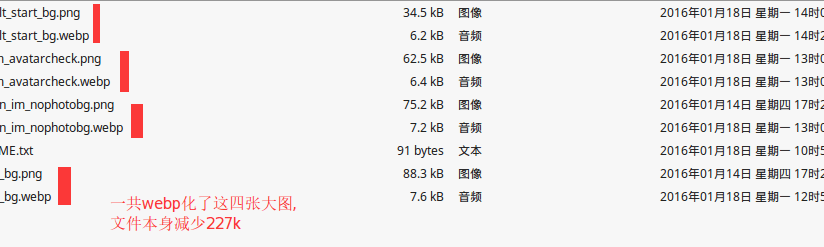
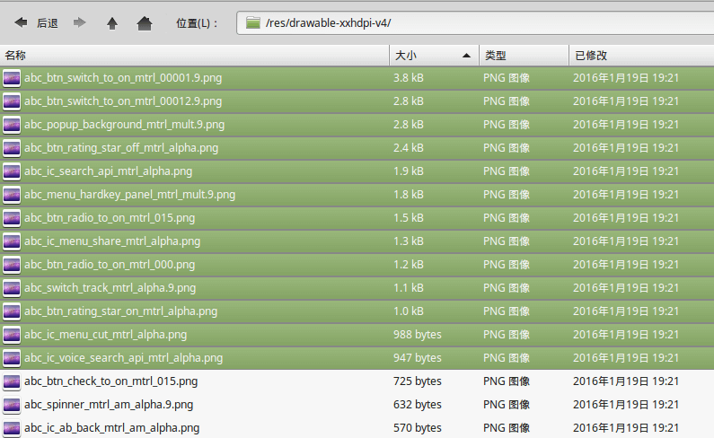
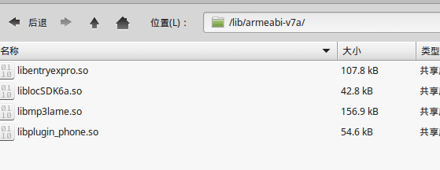
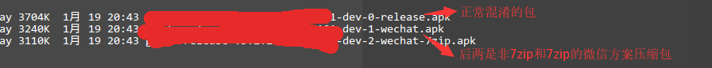
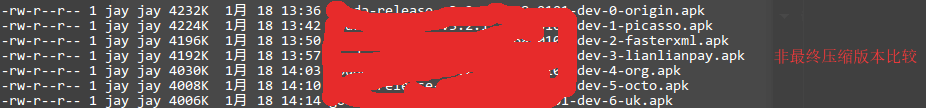
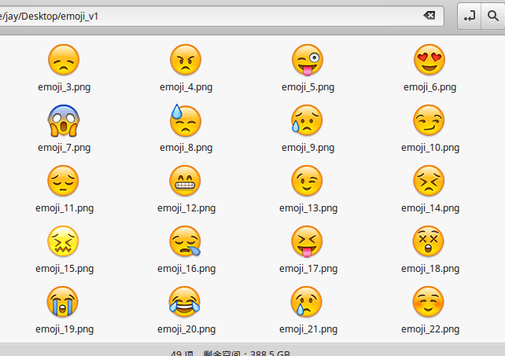
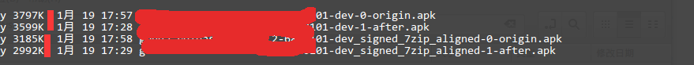
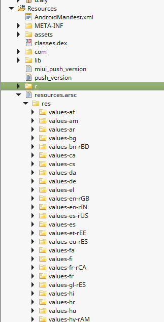
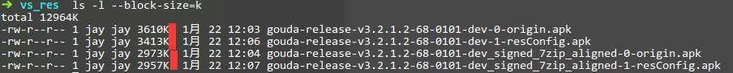

APK瘦身实践
来源:杰风居
因为推广的需要，公司需要把APK的大小再“减小”一下，4M以内！ 当达到4M以内之后，公司建议说，能否再压压？2M如何？
瘦身前
因为平时就考虑到大小的限制，所以很多工作已经做过了，如下列举现在的状态：
- 7.3M（Debug版本）和6.5M（Release版本）
- 开启minifyEnabled
- 开启shrinkResources
- 已经去除不相关的大型库
- 图片和代码已经经历过粗略的一轮清理
开始魔鬼瘦身
1. tinypng有损压缩
android打包本身会对png进行无损压缩，不信大家可以看看apk中的图片的大小实际上比你代码工程里的图片要小（针对没进行过无损压缩的那些png图）。
所以，纯粹的进行无损压缩并不会对apk的减小有任何效果，这是我特别想在这里强调的一个经验。 现在大家主流的比较喜欢用的tinypng其实是有损压缩：
[原文] TinyPNG uses smart lossy compression techniques to reduce the file size of your PNG files…
[翻译] TinyPNG使用智能有损压缩技术，来减少PNG文件的大小…
通过tinypng确实能在尽量少的损失下再减小apk，如果图片资源多或者大的话，效果还是很明显的。
具体减少多少，因为这个处理过程我们是间隔做的，无法准确给出结果，就按200k～500k算吧。
2. png换成jpg
经验发现，一些背景，启动页，宣传页的PNG图片比较大，这些图片图形比较复杂，如果转用有损JPG可能只有不到一半（当然是有损，不过通过设置压缩参数可以这种损失比较小到忽略）。
因为都是大图，所以这种方式能有效减小apk的大小。
这种情况下的apk的减小是不可估量的。
3. jpg换成webp
如果png大图转成jpg还是很大，或者想压的更小，而尽量不降低画质，那么可以考虑一下webp。
android 4.0+才原生支持webp, 但是我们的app是兼容2.3+，所以4.0以下的设备将无法看到图片。
考虑到我们4.0以下的所有设备比例之和大约在0.44%，非常少
- 4.0以下的设备不会崩溃
我们选择不对4.0以下做webp兼容处理，不显示就不显示。否则，要引入webp相关so文件增大apk大小。
通过把下面四张大图换成webp，webp的quality参数按50配置(据说官方评测75是最佳值)，清晰度勉强可以接受，这个值大家具体按产品要求来定。

其中安装jpg转webp工具:
brew install webp
转换命令如下
cwebp -q <quality> input.jpg output.webp
// Example:
cwebp -q 50 a.jpg a.webp
更多下载：https://developers.google.com/speed/webp/docs/precompiled
最终，apk减小了188k。
4. 大图缩小
如果经过上面的步骤，依然存在大图的话，说明确实图有点大了，可能真的有点大了！ 所以，要考虑的问题是，是否有必要保证如此的大小？能否缩小？ 如果这方面能减小的话，apk瘦身的效果必然又会上一个档次。 这种情况下的apk的减小是不可估量的。
5. 覆盖aar里的一些默认的大图
一些aar库里面包含根本就没有用的图。最典型的是support-v4兼容库中包含一些“可能”用到的图片，实际上在你的app中不会用到。

我没有把所有图都替换掉，只是把几张大一点点的图（选中的那些图）用1x1的图片替换，如果9patch图的话，要做成3x3的9patch图替换。
support库可能还算好的，就怕有些库引用了一些大图而不自知，可以在/build/intermediates/exploded-aar/下的各个aar库的res目录查找检验。
apk减小了18k。
6. 删除armable-v7包的so
感谢@杨辉__ ,@kymjs张涛的提醒，armable-v7和armable文件夹可以只保留armable。
当然，armable-v7a的库会对图形渲染方面有很大的改进，因为我们主要是一些业务上动态库，所以删掉无大碍。

apk减小了191k。
7. 微信资源压缩打包
这个方案网上一直在说，之前一直没有需求或者动力实践，在这里感谢一下@裸奔的凯子哥的推荐和交流，他那边的apk可以压小1M，效果还是比较惊人的。
这个步骤我是在后面很多步压缩之后测试的，每个阶段的压缩结果都会有些许出入，所以数据仅供参考。

微信压缩方案结果比较
- 通过正常压缩，apk包减小了464k。
- 如果开启7zip，apk包减小了594k。
- apk减小了594k。
PS: 关于这个压缩，我集成到了gradle脚本中了，新建了一个Task，大概代码如下：
task compressReleaseApp {
// 在现有release的版本上生成到compressed目录下
def appid = "appid"
def channel = "abcdefghijkl"
def guardJarFile = file('../AndResGuard/andresguard-1.1.jar')
def guardConfigFile = file('../AndResGuard/config.xml')
def originApkFile = file("../app.${appid}/build/outputs/apk/release/${appid}-release-${rootProject.ext.versionName}-${rootProject.ext.versionCode}-${channel}.apk")
def outputDir = file("../app.${appid}/build/outputs/apk/compressed/")
def keystoreFile = file(RELEASE_STORE_FILE)
// 开始执行压缩命令
def proc = "java -jar ${guardJarFile} ${originApkFile} -config ${guardConfigFile} -out ${outputDir} -signature ${keystoreFile} ${RELEASE_STORE_PASSWORD} ${RELEASE_KEY_PASSWORD} ${RELEASE_KEY_ALIAS}".execute();
proc.waitFor();
println "return code: ${ proc.exitValue()}" +
", stderr: ${proc.err.text}" +
" stdout: ${proc.in.text}"
}
config开启了7zip, 部分配置如下：
<?xml version="1.0" encoding="UTF-8"?>
<resproguard>
<!--defaut property to set -->
<issue id="property" >
<seventzip value= "true" />
<!-- ... -->
</issue>
<issue id="whitelist" isactive="true">
<path value ="com.xxx.yyy.R.drawable.emoji_*" />
<path value ="com.xxx.yyy.... />
</issue>
<issue id ="
compress" isactive="true">
<!-- ... -->
</issue>
</resproguard>
- 详情参考：https://github.com/shwenzhang/AndResGuard
- 原理介绍：http://mp.weixin.qq.com/s?__biz=MzAwNDY1ODY2OQ==&mid=208135658&idx=1&sn=ac9bd6b4927e9e82f9fa14e396183a8f#rd
8. proguard深度混淆代码
之前为了简单起见，很多包都直接忽略了，现在启动严格模式，把能混淆的都混淆了：release版本混淆效果

采用微信压缩方案最终效果比较：
最终压缩release版本混淆效果 apk减小了215k。
PS:混淆后，一定要经过严格测试，有时候甚至很难发现错误，比如我开启严格混淆，用了一段时间之后慢慢发现了两个bug，排除了两个包程序才正常。
9. 深度清理代码和资源
有意思的是，无论何时何地去清理代码和资源，总能有新的发现:
- 新发现或者新引入的无用图片
- 这几张图怎么一样
- 这个类好像没有用
- 没用的类相关的图片也没用
- 有些图片可以用着色方案替换
- 有些图片可以用shape来代替
- hdpi里的ic_luancher.png好像也可以删掉
- …
apk减小了66k。
10. proguard去符号表
之前为了保留调试信息，我们是在Proguard保留了符号表的：
-keepattributes SourceFile,LineNumberTable
官方渠道我觉得还是尽量保留这个，现在针对推广渠道，只能采用特殊手段，注释这一行。
apk减小了230k。
ps:以后友盟上看推广渠道的bug要辛苦一点，手动上传mapping.txt了。
11. provided关键字
可以对仅在运行时需要的库设置provided关键字，实际并不被打包：
provided 'com.android.support:support-annotations:22.0.0'
我没有发现这样的场景，如果说有的话，就是support-annotations，但是经过后来的测试验证，support-annotations本来就会在release版本中被minifyEnabled掉，所以对support-annotations设置provided是没有意义的。
如果有实际场景，欢迎留言说明，不甚感激。
apk没有减小。
12. 表情包在线化
虽然应用的表情不多，只有50来个，但是如果能把这部分表情放到网上，不仅能有效减小apk大小，还可以方便后期扩展支持：

打包成emoji_v1.zip, 大小是202k。
现在把emoji_v1.zip放到网上，按需下载后使用，最终对比结果如下： 表情包在线化成效

apk减小了193k。
13. 全版本兼容的着色方案
考虑着色方案主要目的是更方便支持多主题，减轻UI工作量，减少工程里一大堆selector文件等，然后才是，顺便的减小一下apk大小。
通过着色方案，我们去除了10多张纯色的按下状态图片和对应的xml等等。
apk减小了15k。
PS: 具体实现可以参考 http://www.race604.com/tint-drawable/ ，而我也把它集成到了我的LessCode库中了：DrawableLess.java
14. 去除重复库
发现两个地方：
- 现在发现七牛的SDK引用了android-async-http-1.4.6.jar，虽然不大，只有95.4k，但是感觉完全可以写一个轻量级的jar，控制在10～20k就足够了，具体可以在现有的网络库上实现。
- 自己工程使用的是UIL，但是引入的第三方库引用了picasso，两个重复的图片下载库也是完全没用必要的。 现在还没有处理这块，新任务介入，延期优化，敬请期待。
15. 去除无用库
这是一个很基本的点，但是确很容易被人忽视，当你仔细回顾的时候，有一些鸡肋的功能或者库，是几无用处的。不如干脆去掉。
比如，在很早的时候，我就把我们app里的sharesdk删除了，因为对于我们的产品定位和推广来看，这毫无意义。 这种情况下的apk的减小是不可估量的。
16. 去除百度统计
这个视具体情况决定。
因为我们的APP里面包含友盟和百度两套统计系统，早期老板要求，事实上后面已经很少看这方面的数据，百度统计的数据几乎没用人去看，可以暂时先去除。
原本的百度统计的jar有130多k，去除之后的apk的减小会远远没有这么多。
apk减小了20k。
17. 使用更小的库
使用更小的库不应该成为你选择方案的决定性因素，但是可以作为参考因素（freso确实太大了，这个大小也可以成为决定性因素）。
图片下载，网络请求，json解析等等的库和它的竞品都有多大，你心里有数吗？
以工具库为例，网上有很多工具库，但是往往它们的大小很难控制。
- xutils-3.2.6.aar – 843.8k
- lite-common-1.1.3.jar – 148.1k
- lesscode-core-0.8.2.aar – 64k
- …
上面最后一个库LessCode是我自己收集的工具类集合，非常小：LessCode，混淆后只有不到50k大小。
不仅提高了开发效率，减少了冗余代码，而且能避免引用一些其他大型的库，有效避免包的增大。
比如，我们碰到过这样的一个bug，快速点击按钮多次触发跳转，现在RxJava结合RxBind有这样的一个场景解决方案，如果引入这些库的话必然会增大apk大小，实际上就几行代码，我把这样的解决方案集成到了LessCode，下次别的项目碰到这样的问题不用再犹豫是否要引入一个这么大的库了。
这些小的工具库，建议根据自己的经验人手总结一个，不求全，但求精！
这种情况下的apk的减小是不可估量的。
18. 插件化
尴尬的是，我们所呈现的功能大部分都是重要的不可分割的功能，很难从业务上分离出来。
今年预计要实践一个轻量级的插件化方案，用别人的也好，自己写也好，希望能解决或者优化一些安装包加载多模块，或者主题
切换，或者热修复的问题。
这里作为候选方案备用。
这种情况下的apk的减小是不可估量的。
19. 功能业务取舍
一开始考虑瘦身，领导是允许适当的砍掉一些功能，因为4M的目标我们已经实现了，所以现在还没有到砍功能的地步。 这里作为候选方案备用。
这种情况下的apk的减小是不可估量的。
补充
文章发出后，收到了一些朋友的建议，补充几点。
- 去除无用的语言资源
感谢@牧志轩的建议，通过配置resConfigs可以选择只打包哪几种语言，进而去掉各种aar包中全世界的语言，尤其是support包中的。

选择保留什么语言要根据产品的用户和市场来定，如果只选择默认英语和中文语言，配置如下
android {
defaultConfig {
resConfigs "zh"
}
}
看看效果：

只选择默认英文和中文的语言包效果
如果不采用微信压缩方案结果对比，apk减小了197k。
如果采用微信压缩（开启7zip）对比结果，apk只减小了16k，因为微信对resources.arsc进行了强力压缩，厉害！ apk减小了16k。
- 删除x86包的so
再次感谢@杨辉__的建议，x86的包删除了之后，测试反应好像有些机器容易崩溃，未能经过严格测试，所以主版本又复原了，只在个别渠道执行这条措施。
一般情况下不会有问题，测试了一下效果，apk减小了78k。
这里作为候选方案备用。
小结
最终，我们成功的把apk压到了2.9M，如果把上面遗漏的步骤继续再做，应该还能再减小一点。 客户反应压的好小，领导简直不敢相信～ 瘦身不难，难的是魔鬼瘦身！